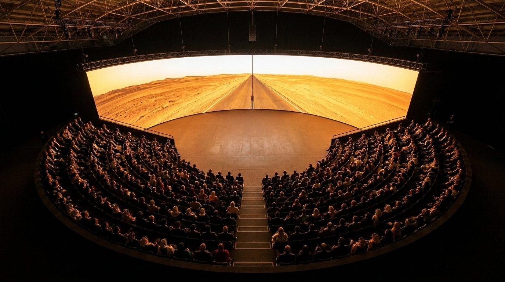

22:05
The living walls
After the group photo and the gift — a small potted plant — guests leave along a corridor whose two walls are interactive LED screens showing a real street: apartments, balconies full of flowers, warm windows.

Part 4 of 4 22:00 – 22:30
Out along a street that comes alive under your hand
After dinner, guests take a group photo, collect their gift and leave along a corridor whose two walls are interactive LED screens showing a real, sunlit street. Wherever a hand touches the wall, flowers bloom, windows light up and the smog clears — on the screen, right under their fingers.
22:05
After the group photo and the gift — a small potted plant — guests leave along a corridor whose two walls are interactive LED screens showing a real street: apartments, balconies full of flowers, warm windows.
22:10
A guest lays her hand on the wall. On the screen, the balcony flowers bloom and climb towards her hand.
22:12
A touch sends a ripple of warm light across the facade; one by one the windows light up and a neighbour steps out onto her balcony.
22:14
Where a hand rests, the grey sky clears: the smog lifts, the trees turn green and the street comes back to life. Every effect stays on the screen — nothing leaves the wall.
4 frames. Select any frame to see it full size.
Leaving dinner, guests pass a photo booth set against the living street for a group souvenir photo of each party, printed on the spot. Beside it, the gift counter: every guest takes home a small potted plant — a sign of the fresh breath.
The way out is a corridor of about 40 m with interactive LED walls on both sides, about 5 m high. On them, a real, photographic residential street — apartments and houses, balconies full of flowers, warm windows; no towers and no landmarks. Sensors at hand height read every touch, and a real-time engine answers it on the screen: flowers bloom towards the hand, windows light up in a ripple, the smog clears around the palm. Every effect stays on the surface of the wall; nothing flies out into the corridor.

NextThe plan